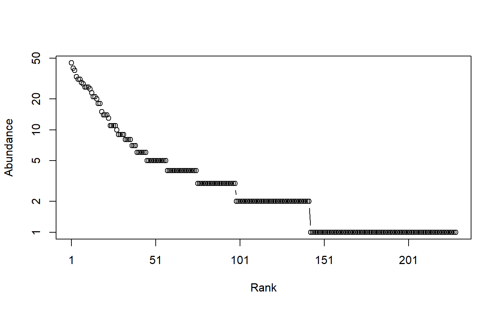

Tsallis.RdCalculates the HCDT, also known as Tsallis entropy of order \(q\) of a probability vector.
Tsallis(NorP, q = 1, …) bcTsallis(Ns, q = 1, Correction = "Best", SampleCoverage = NULL, CheckArguments = TRUE) # S3 method for ProbaVector Tsallis(NorP, q = 1, …, CheckArguments = TRUE, Ps = NULL) # S3 method for AbdVector Tsallis(NorP, q = 1, Correction = "Best", Level = NULL, PCorrection="Chao2015", Unveiling="geom", RCorrection="Rarefy", …, CheckArguments = TRUE, Ns = NULL) # S3 method for integer Tsallis(NorP, q = 1, Correction = "Best", Level = NULL, PCorrection="Chao2015", Unveiling="geom", RCorrection="Rarefy", …, CheckArguments = TRUE, Ns = NULL) # S3 method for numeric Tsallis(NorP, q = 1, Correction = "Best", Level = NULL, PCorrection="Chao2015", Unveiling="geom", RCorrection="Rarefy", …, CheckArguments = TRUE, Ps = NULL, Ns = NULL)
| Ps | A probability vector, summing to 1. |
|---|---|
| Ns | A numeric vector containing species abundances. |
| NorP | A numeric vector, an integer vector, an abundance vector ( |
| q | A number: the order of entropy. Some corrections allow only a positive number. Default is 1 for Shannon entropy. |
| Correction | A string containing one of the possible asymptotic estimators: |
| Level | The level of interpolation or extrapolation. It may be an a chosen sample size (an integer) or a sample coverage (a number between 0 and 1). |
| PCorrection | A string containing one of the possible corrections to estimate a probability distribution in |
| Unveiling | A string containing one of the possible unveiling methods to estimate the probabilities of the unobserved species in |
| RCorrection | A string containing a correction recognized by |
| SampleCoverage | The sample coverage of |
| … | Additional arguments. Unused. |
| CheckArguments | Logical; if |
Tsallis (Havrda and Charvat, 1967; Daroczy, 1970; Tsallis, 1988) generalized entropy is a generalized measure of diversity (Jost, 2006).
Bias correction requires the number of individuals to estimate sample Coverage.
Correction techniques are from Chao and Shen (2003), Grassberger (1988), Holste et al. (1998), Bonachela et al. (2008), (Marcon et al., 2014), which is actually the max value of "ChaoShen" and "Grassberger", Zhang and Grabchak (2014), Chao and Jost (2015) and Marcon (2015).
The "ChaoJost" (Chao, Wang and Jost, 2013 for \(q=1\); Chao and Jost, 2015) estimator contains an unbiased part concerning observed species, equal to that of Zhang and Grabchak (2014), and a (biased) estimator of the remaining bias based on the estimation of the species-accumulation curve.
It is very efficient but very slow if the number of individuals is more than a few hundreds.
This estimator was named "ChaoWangJost" in previous versions of the package; its old name is still supported for backward compatibility.
The unveiled estimators rely on Chao et al. (2015), completed by Marcon (2015).
The actual probabilities of observed species are estimated and completed by a geometric distribution of the probabilities of unobserved species.
The number of unobserved species is estimated by the Chao1 estimator ("UnveilC"), following Chao et al. (2015), or by the iChao1 ("UnveiliC") or the jacknife ("UnveilJ").
The "UnveilJ" correction often has a lower bias but a greater variance (Marcon, 2015).
It is a good first choice thanks to the versatility of the jacknife estimator of richness.
The functions are designed to be used as simply as possible.
Tsallis is a generic method. If its first argument is an abundance vector, an integer vector or a numeric vector which does not sum to 1, the bias corrected function bcTsallis is called.
The size of a metacommunity (see MetaCommunity) is unknown so it has to be set according to a rule which does not ensure that its abundances are integer values.
Then, classical bias-correction methods do not apply.
Providing the SampleCoverage argument allows applying the "ChaoShen" and "Grassberger" corrections to estimate quite well the entropy.
DivPart and GammaEntropy functions use this tweak.
Entropy can be estimated at a specified level of interpolation or extrapolation, either a chosen sample size or sample coverage (Chao et al., 2014), rather than its asymptotic value.
Special cases $q$ equals 0, 1 or 2 are treated by Richness, Shannon and Simpson functions.
For extrapolation of entropy of other values of $q$, the asymptotic distribution of the community must be estimated by as.ProbaVector.
The default arguments allow joining smoothly the extrapolated entropy and the observed entropy by estimating the number of unobserved species so that the entropy of the observed distribution equals the entropy of the asymptotic distribution rarefied to the actual sample size.
A named number equal to the calculated entropy. The name is that of the bias correction used.
Chao, A., Gotelli, N. J., Hsieh, T. C., Sander, E. L., Ma, K. H., Colwell, R. K., Ellison, A. M (2014). Rarefaction and extrapolation with Hill numbers: A framework for sampling and estimation in species diversity studies. Ecological Monographs, 84(1): 45-67.
Chao, A. and Jost, L. (2015) Estimating diversity and entropy profiles via discovery rates of new species. Methods in Ecology and Evolution 6(8): 873-882.
Chao, A., Hsieh, T. C., Chazdon, R. L., Colwell, R. K., Gotelli, N. J. (2015) Unveiling the Species-Rank Abundance Distribution by Generalizing Good-Turing Sample Coverage Theory. Ecology 96(5): 1189-1201.
Chao, A., Wang, Y. T. and Jost, L. (2013). Entropy and the species accumulation curve: a novel entropy estimator via discovery rates of new species. Methods in Ecology and Evolution 4(11):1091-1100.
Havrda, J. and Charvat, F. (1967). Quantification method of classification processes. Concept of structural a-entropy. Kybernetika 3(1): 30-35.
Daroczy, Z. (1970). Generalized information functions. Information and Control 16(1): 36-51.
Jost, L. (2006). Entropy and diversity. Oikos 113(2): 363-375.
Marcon, E. (2015) Practical Estimation of Diversity from Abundance Data. HAL 01212435: 1-27.
Marcon, E., Scotti, I., Herault, B., Rossi, V. and Lang, G. (2014). Generalization of the partitioning of Shannon diversity. PLOS One 9(3): e90289.
Tsallis, C. (1988). Possible generalization of Boltzmann-Gibbs statistics. Journal of Statistical Physics 52(1): 479-487.
Zhang, Z., and Grabchak, M. (2016). Entropic Representation and Estimation of Diversity Indices. Journal of Nonparametric Statistics, 28(3): 563-575.
# Load Paracou data (number of trees per species in two 1-ha plot of a tropical forest) data(Paracou618) # Ns is the total number of trees per species Ns <- as.AbdVector(Paracou618.MC$Ns) # Species probabilities Ps <- as.ProbaVector(Paracou618.MC$Ns) # Whittaker plot plot(Ns)# Calculate entropy of order 1, i.e. Shannon's entropy Tsallis(Ps, 1)#> None #> 4.736023# Calculate it with estimation bias correction Tsallis(Ns, 1)#> UnveilJ #> 4.928035